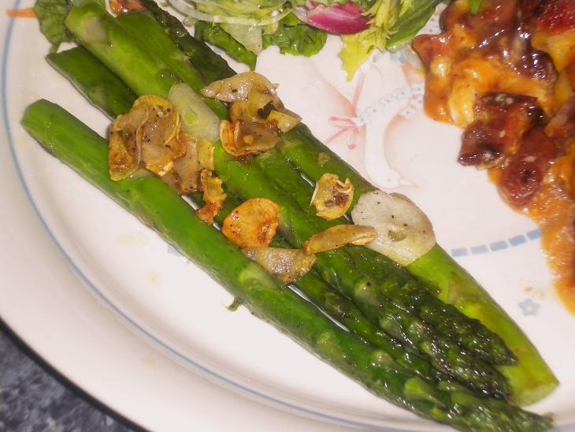

<DOCTYPE! html>
<html>
	<head>
		<title>Nick's Cookbook</title>
		<link href="../CSS style.css" type="text/css" rel="stylesheet" />
	</head>
	<body>
		<h1><center>Nick's Cookbook</center></h1>
		<h2>Pan-Fried Asparagus</h2>
		<p>Step 5:  Add garlic, cook another minute or two. Enjoy!</p>
		<br />
		<a href="sides14.html">Step 4</a></a><br /><br />
		<a href="../../homepage.html">Homepage</a><br />
		<a href="../sideshome.html">Sides</a><br />
		<a href="sides1home.html">Main page of Pan-Fried Asparagus</a>
	</body>
</html>